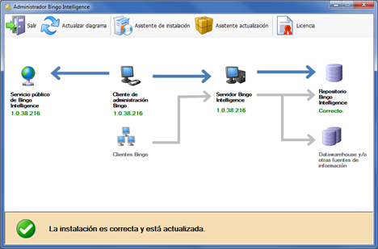
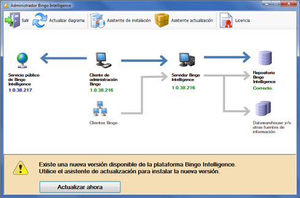
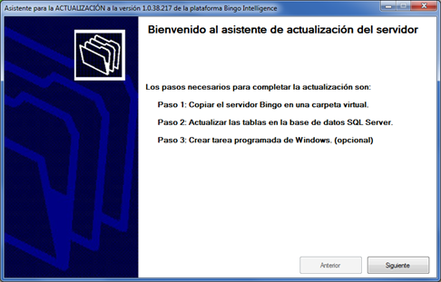
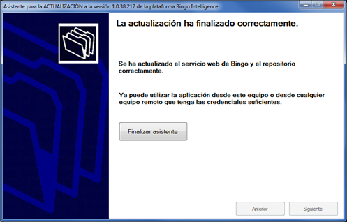
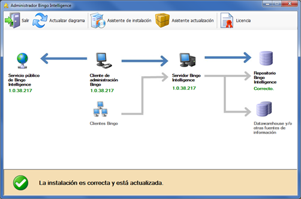
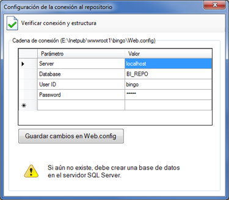
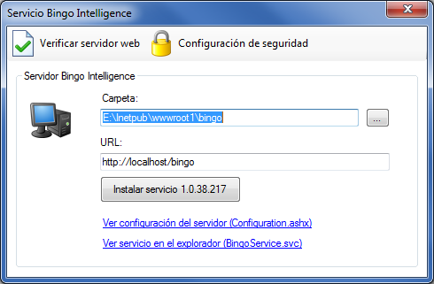
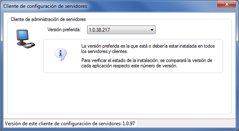
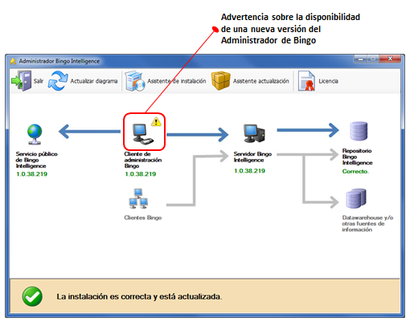
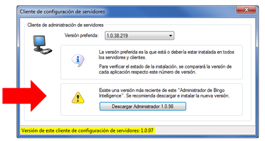

Administrador de Bingo Intelligence
El “Administrador de Bingo Intelligence” es la aplicación que utiliza el administrador del sistema para instalar, configurar y actualizar la plataforma. Además, de instalar el servidor de Bingo Intelligence, con el Administrador se pueden aplicar las actualizaciones cuando están disponibles.
Una vez instalada la plataforma, el Administrador debe mostrar este diagrama:

En este diagrama se indica:
- La última versión disponible de la plataforma de Bingo Intelligence
- La versión seleccionada desde el Administrador
- La versión instalada en el servidor
- Y la conformidad de la estructura del repositorio con la versión del servidor
Cuando todas estas versiones coinciden, la instalación está actualizada.
Actualizaciones periódicas
Periódicamente, Bingo Intelligence pone a disposición de sus clientes nuevas versiones que resuelven problemas conocidos o que añaden nuevas funcionalidades.
Para poder disfrutar de estas mejoras, se recomienda mantener siempre la instalación actualizada con las últimas versiones disponibles.
Bingo Intelligence nunca actualiza la instalación de los clientes ni de los servidores automáticamente. Debe ser el administrador quien actualice el sistema desde el “Administrador de Bingo Intelligence”.
El proceso es sencillo. Además, al actualizar el servidor, se sincronizará también la versión de todos los clientes de Bingo Análisis y Bingo Excel (la siguiente vez que se conecten).
Cuando existe una nueva versión disponible, ésta aparece en el diagrama del Administrador, y aparece un mensaje advirtiendo que la instalación no está actualizada:

Para actualizar el sistema se debe hacer clic en el botón “Actualizar ahora”, y aparecerá el siguiente asistente:

El asistente de actualización es muy parecido al asistente de instalación, y se pueden dejar las opciones predeterminadas. Al finalizar debe aparecer este mensaje:

Además el “Administrador de Bingo Intelligence” mostrará que se ha actualizado la versión del servidor, y que la instalación ya es correcta:

Durante el proceso de actualización, se sobrescriben los ficheros del servicio web de Bingo Intelligence y, si es necesario, se actualiza la estructura del repositorio.
IMPORTANTE: El repositorio contiene toda la configuración de la plataforma Bingo Intelligence, incluyendo toda la configuración de usuarios, todos los catálogos, y todas las aplicaciones e informes de los usuarios. Para migrar el sistema a otro servidor, o para recuperar la instalación después de un “desastre”, sólo es necesario disponer de una copia actualizada de esta base de datos. El administrador del sistema es responsable de hacer copias de seguridad de esta base de datos de manera periódica, y de establecer los mecanismos de recuperación oportunos.
Resolución de incidencias
Una vez instalada la plataforma no es necesario ningún mantenimiento especial. Sin embargo, ocasionalmente, puede ser necesario modificar la configuración existente. Esto puede ocurrir, por ejemplo, si se desea cambiar la ubicación del servicio web, o si se desea cambiar la configuración de conexión al repositorio. También existe la opción de realizar un “downgrade” a una versión previa de Bingo Intelligence.
Para acceder a estas opciones de configuración, se debe hacer clic en los elementos que aparecen en el diagrama.
Configuración del Repositorio
Al hacer clic en el icono del “Repositorio de Bingo Intelligence” aparece esta ventana de configuración:

Desde aquí se puede modificar la cadena de conexión almacenada en Web.config, o verificar si la estructura de la base de datos es correcta.
Configuración del Servidor
Al hacer clic en el icono del “Servidor de Bingo Intelligence” aparece esta ventana de configuración:

Desde aquí se puede reinstalar el servicio o modificar su ubicación. Si se cambia la URL, los clientes deberán instalarse de nuevo Bingo Análisis y Bingo Excel desde la nueva ubicación.
También se puede definir el modo de autentificación de los usuarios.
Cliente de administración
Al hacer clic en el icono del “Cliente de administración Bingo” aparece esta ventana de configuración:

Desde esta ventana se puede seleccionar la versión que se instalará en el servidor y en todos los clientes. Se recomienda instalar siempre la última versión disponible.
Actualización del Administrador de Bingo Intelligence
Excepcionalmente, Bingo Intelligence puede actualizar el propio “Administrador de Bingo Intelligence”. En este caso, es necesario descargarse e instalar la nueva versión de BingoAdminSetup.msi.
Si hay una actualización del Administrador Bingo Intelligence, aparecerá un icono de advertencia en el diagrama:

Al hacer clic en el icono se abrirá un formulario desde donde podremos descargarla.

Una vez descargada se debe cerrar el administrador, ejecutar el programa de instalación, y seguir los pasos indicados en pantalla.
Se recomienda instalar siempre la última versión disponible del Administrador de Bingo Intelligence.